Sécurité selon Opquast V5 - version 4
Présentation - Sécurité selon Opquast V5 - version 4
Slide 1 sur 30 - Sécurité selon Opquast V5
Slide 1 - Sécurité selon Opquast V5
Un ordinateur portable affiche un service en HTTPS au centre. Quatre encarts autour de l’écran montrent un profil, un fichier de code, un serveur et une enveloppe. Chacun est relié à l’interface centrale par un trait associé à un point d’interrogation. La question demande si un service entièrement en HTTPS est nécessairement sûr, avec une invitation à voter oui ou non.
Une chaîne de confiance plus large que HTTPS
- La présence de HTTPS répond à une question essentielle : les échanges entre le navigateur et le serveur sont-ils chiffrés ?
- Elle ne répond pas, à elle seule, aux questions qui concernent le compte, les ressources chargées, les informations révélées par le serveur ou les courriels envoyés au nom du service.
- Les 21 règles de la rubrique Sécurité construisent donc une chaîne de précautions observables, depuis l'arrivée sur le service jusqu'aux messages reçus hors de la page.
- Cette chaîne constitue un socle de prévention.
- Elle ne garantit pas la sécurité globale du système et ne remplace pas un audit de sécurité.
Relier chaque règle à une preuve bornée
- Pour suivre cette chaîne sans confondre les mécanismes, chaque règle sera reliée à un risque, un contrôle et une limite.
Slide 2 - Comprendre le risque, savoir contrôler
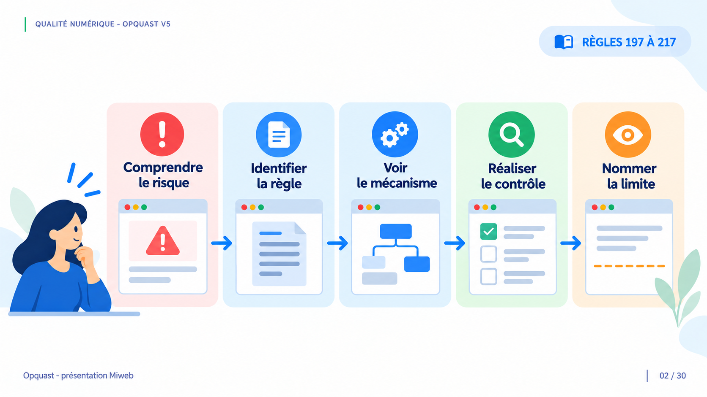
Cinq panneaux non numérotés sont reliés de gauche à droite par des flèches. Ils présentent successivement la compréhension du risque, l’identification de la règle, le mécanisme, le contrôle et la limite. Chaque panneau associe une couleur, un pictogramme et une scène à une fonction précise de l’analyse.
Du risque à une preuve bornée
- Une règle devient utile quand elle relie un risque concret à une vérification réalisable.
- Le mécanisme explique pourquoi la précaution produit l’effet attendu.
- Le contrôle transforme cette intention en preuve observable dans le service, le navigateur ou sa configuration.
- La limite évite d’étendre cette preuve au-delà de ce qui a réellement été vérifié.
- Cette démarche permet aux métiers de partager le même raisonnement, même lorsqu’ils n’interviennent pas sur les mêmes composants.
Situer le périmètre du socle
- Avant d’appliquer cette méthode, il faut situer précisément ce que couvre le socle Opquast.
Slide 3 - Un socle de prévention, pas un audit cyber complet
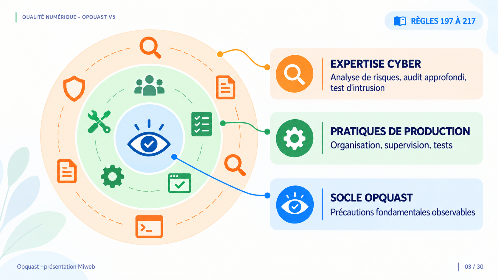
Trois zones concentriques situent le périmètre des règles. Un œil coché représente le socle Opquast au centre. Des outils, un groupe, une liste cochée, un engrenage et une fenêtre validée occupent le niveau des pratiques de production. Des loupes, des documents, un bouclier et un terminal occupent le niveau de l’expertise cyber.
Un socle observable, pas une promesse globale
- Le référentiel Opquast décrit des précautions fondamentales que l’on peut vérifier sur un service web.
- Les pratiques de production ajoutent l’organisation, la supervision et les tests nécessaires au fonctionnement durable du service.
- L’expertise cyber va plus loin avec l’analyse de risques, l’audit approfondi ou le test d’intrusion.
- Le respect des règles de cette rubrique ne constitue donc ni une homologation ni la preuve d’une sécurité absolue.
- Sa valeur est plus ciblée : prévenir des risques courants et rendre visibles des exigences partagées entre métiers.
Parcourir la chaîne en cinq chapitres
- Ce périmètre posé, la chaîne de confiance peut être parcourue en cinq chapitres.
Slide 4 - Cinq chapitres pour suivre la chaîne de confiance
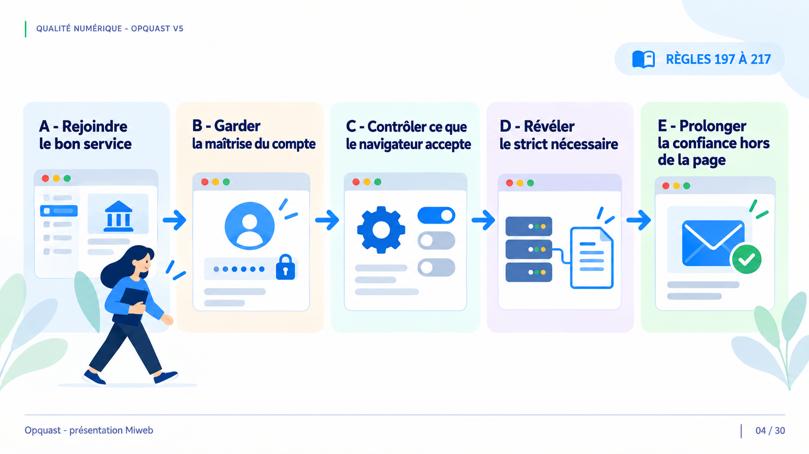
Une rangée de cinq cartes repérées de A à E est reliée par des flèches. Les cartes couvrent successivement l’accès au bon service, la maîtrise du compte, le contrôle du navigateur, la limitation des informations révélées et la confiance prolongée dans les courriels.
Une chaîne suivie de bout en bout
- La première étape vérifie que l’utilisateur atteint le bon service par un canal protégé.
- La deuxième concerne la maîtrise du compte, depuis le choix du mot de passe jusqu’à sa réinitialisation.
- La troisième porte sur ce que le navigateur accepte, conserve ou exécute.
- La quatrième limite les informations que le serveur révèle inutilement.
- La cinquième prolonge la confiance dans les courriels envoyés au nom du service.
- Ces chapitres suivent un même parcours sans supposer qu’un seul métier en possède toutes les réponses.
Relier le parcours à ses propriétaires
- Cette continuité d’usage repose en pratique sur plusieurs propriétaires.
Slide 5 - La sécurité est une responsabilité distribuée
Cinq panneaux verticaux alignés côte à côte représentent l’infrastructure, le produit et le fonctionnel, le développement, l’éditorial et le support, ainsi que la messagerie et le DNS. Sous ces panneaux, un parcours horizontal relie cinq pictogrammes par des flèches. Une phrase conclut qu’un parcours implique plusieurs propriétaires.
Une responsabilité répartie
- La sécurité perçue par l’utilisateur traverse plusieurs composants et ne se réduit pas à une décision technique isolée.
- L’infrastructure porte notamment le canal, les certificats et les en-têtes envoyés par le serveur.
- Le produit définit les capacités offertes pour gérer un compte ou valider une opération.
- Le développement maîtrise les ressources chargées, les données exposées et les comportements du navigateur.
- L’éditorial, le support, la messagerie et le DNS prolongent la confiance dans les contenus et les courriels.
- Ces affectations constituent une proposition de gouvernance, pas une taxonomie officielle Opquast.
- Le parcours reste unique pour l’utilisateur, même lorsque sa maîtrise est distribuée.
Commencer par l’accès au service
- Le premier chapitre commence là où l’utilisateur rejoint le service.
Slide 6 - Chapitre A : rejoindre le bon service par un canal sûr
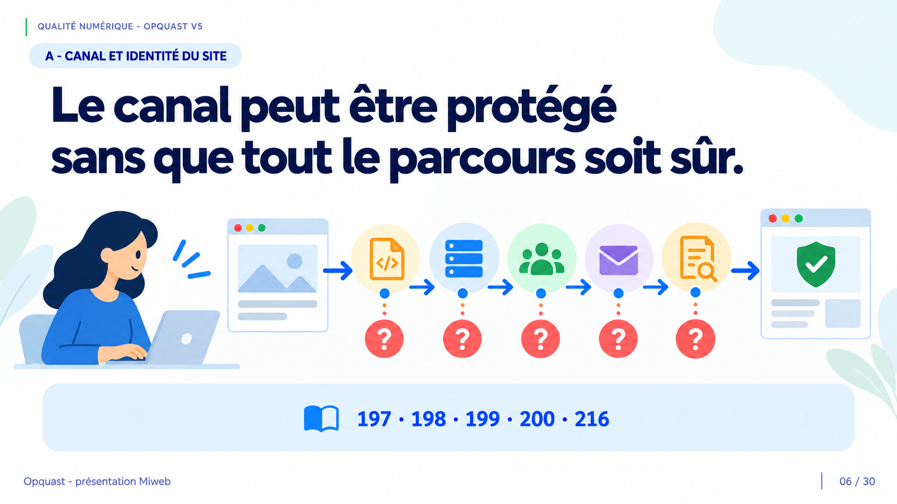
Une large flèche relie une interface consultée à une interface protégée. Cinq pictogrammes jalonnent le trajet et chacun est accompagné d’un point d’interrogation. Les numéros 197, 198, 199, 200 et 216 apparaissent uniquement dans une ligne groupée sous le message principal.
Cinq preuves pour rejoindre le service
- La règle 197 vérifie que toutes les pages utilisent HTTPS.
- La règle 198 porte sur un certificat signé et en cours de validité.
- La règle 199 demande un en-tête de transport strict pour maintenir le navigateur en HTTPS.
- La règle 200 exclut les ressources encore chargées en HTTP dans une page HTTPS.
- La règle 216 conserve la barre d’adresse visible afin que l’utilisateur puisse vérifier où il se trouve.
- Ces preuves se complètent, mais aucune ne démontre à elle seule la sécurité globale du service.
Distinguer les cinq contrôles du canal
- La comparaison des cinq contrôles permet de voir précisément ce que chacun ajoute.
Slide 7 - HTTPS : cinq questions, cinq preuves
Cinq cartes numérotées 197, 198, 199, 200 et 216 posent chacune une question de contrôle. Elles distinguent le passage des pages par HTTPS, la validité du certificat, le maintien du navigateur en HTTPS, le protocole des ressources chargées et la visibilité de l’adresse pour l’utilisateur.
Des contrôles proches, mais non interchangeables
- La règle 197 couvre toutes les pages et leurs ressources, pas seulement la page d’accueil.
- La règle 198 vérifie la signature et la validité du certificat, sans en faire une preuve irréfutable de l’identité du service.
- La règle 199 ajoute une consigne de transport strict grâce à l’en-tête
Strict-Transport-Securityet à sa duréemax-age. - La règle 200 cible le contenu mixte : une page HTTPS ne doit charger aucune ressource en HTTP.
- La règle 216 maintient visible un repère que le contenu de la page ne contrôle pas.
Réunir les preuves techniques du canal
- Les quatre premières preuves peuvent maintenant être rapprochées dans un même contrôle du canal.
Slide 8 - Contrôler le canal sans conclure trop vite
Quatre encarts consacrés aux règles 197 à 200 sont reliés par des traits verts à une interface centrale examinée par une personne. Ils représentent les pages et ressources en HTTPS, le certificat, l’en-tête de transport strict et l’absence de ressource chargée en HTTP. Un panneau inférieur rappelle la limite de portée du contrôle.
Quatre preuves techniques complémentaires
- La règle 197 demande que toutes les pages et toutes leurs ressources utilisent HTTPS.
- La règle 198 impose un certificat signé et en cours de validité.
- La règle 199 se contrôle dans l’en-tête
Strict-Transport-Security, avec une directivemax-age. - La règle 200 vérifie qu’une page HTTPS ne charge aucune image, feuille de style, script ou autre ressource en HTTP.
- Une page conforme ne suffit pas à conclure pour tout le service : le contrôle doit couvrir les différents gabarits et parcours pertinents.
Vérifier le repère extérieur à la page
- Après le canal, un autre repère reste essentiel : l’adresse affichée par le navigateur.
Slide 9 - La barre d’adresse reste une preuve extérieure à la page
Deux fenêtres de navigateur presque identiques présentent des barres d’adresse neutres. La fenêtre de gauche est associée à une coche verte et celle de droite à un point d’interrogation corail. Une personne observe les deux interfaces. Le contrôle et la limite de la règle 216 sont explicités sous les fenêtres.
Règle 216 : garder l’adresse visible
- Une page trompeuse peut reproduire le graphisme d’un service légitime, mais pas la barre d’adresse du navigateur.
- Le contrôle consiste à ouvrir chaque fenêtre et à vérifier que cette barre reste affichée.
Impact du non-respect
- Sans adresse visible, l’utilisateur perd un repère pour identifier la destination et détecter une substitution.
Ce que garantit la règle
- Ce que garantit la règle : chaque fenêtre conserve une barre d’adresse visible et contrôlable.
- Cette visibilité facilite la vérification, mais ne prouve pas à elle seule que le service est légitime.
Passer du service au compte
- La chaîne se déplace ensuite vers la maîtrise du compte.
Slide 10 - Chapitre B : garder la maîtrise du compte
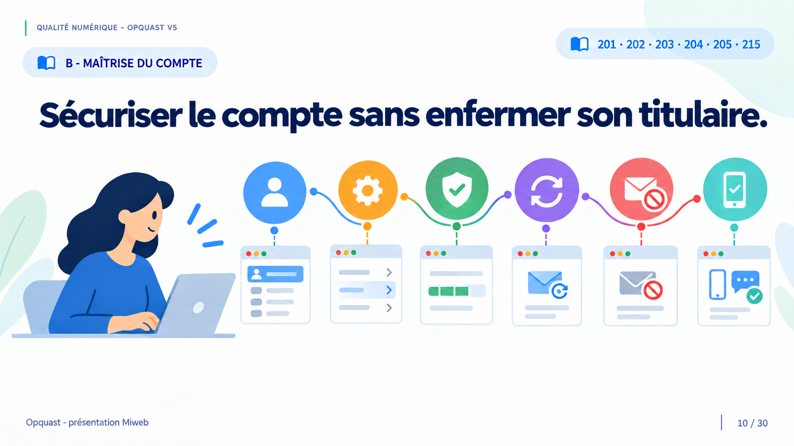
Six pictogrammes sont alignés horizontalement dans des panneaux reliés par des flèches. Ils représentent un profil validé, une interface réglable, un bouclier verrouillé, une réinitialisation validée, un courriel barré et un téléphone associé à une clé. Une personne utilise un ordinateur sous cette rangée.
Protéger le compte sans retirer la main à son titulaire
- La règle 201 rend les opérations relatives aux mots de passe réalisables en ligne.
- La règle 202 permet de choisir son mot de passe ou de remplacer celui qui a été généré automatiquement.
- La règle 203 indique son degré de sécurisation sans imposer de bloquer la création du compte.
- Les règles 204 et 205 permettent une réinitialisation sans communiquer le mot de passe en clair.
- La règle 215 offre au moins deux moyens au choix pour valider une opération sécurisée.
Distinguer les capacités du titulaire
- La suite distingue la contribution de chaque capacité à l’autonomie et à la sécurité.
Slide 11 - Cinq moments du mot de passe, cinq exigences
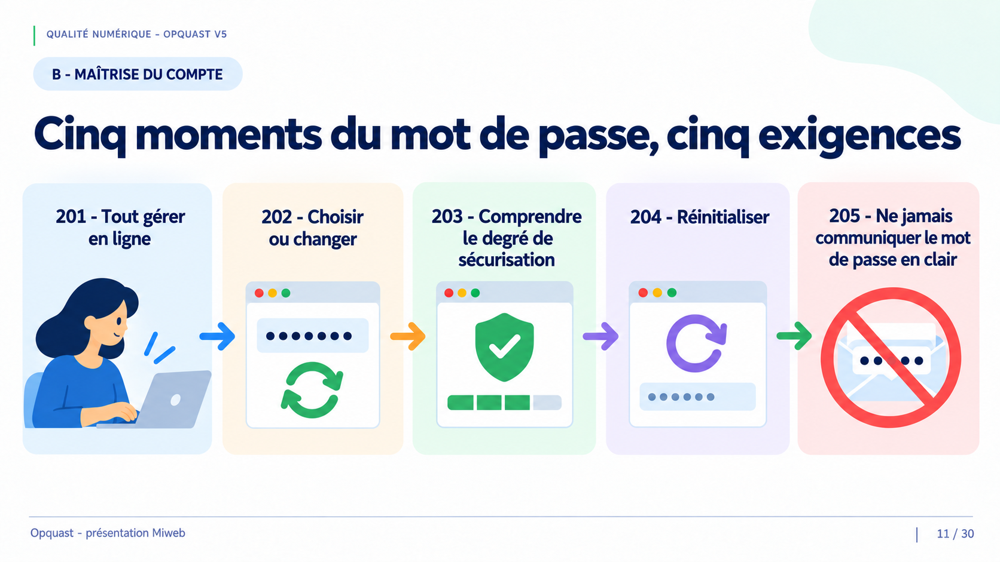
Cinq cartes reliées de gauche à droite représentent des moments distincts du parcours : gérer le compte en ligne, choisir ou changer le mot de passe, comprendre son degré de sécurisation, le réinitialiser et ne jamais le communiquer en clair. Les quatre premières cartes montrent des personnes devant des interfaces ; la dernière montre une enveloppe barrée.
Cinq capacités distinctes autour du mot de passe
- La règle 201 rend les opérations liées au mot de passe intégralement réalisables en ligne.
- La règle 202 permet à l’utilisateur de choisir ou changer son mot de passe.
- La règle 203 l’informe sur le degré de sécurisation de son choix avant la validation.
- La règle 204 prévoit la création d’un nouveau mot de passe en cas de perte.
- La règle 205 interdit de communiquer ce secret en clair, notamment par courriel.
- Ces cinq capacités se complètent sans devenir interchangeables.
Disponibilité et maîtrise
- La disponibilité du processus et la maîtrise du secret répondent d’abord à deux besoins différents.
Slide 12 - Gérer en ligne ne signifie pas choisir son mot de passe
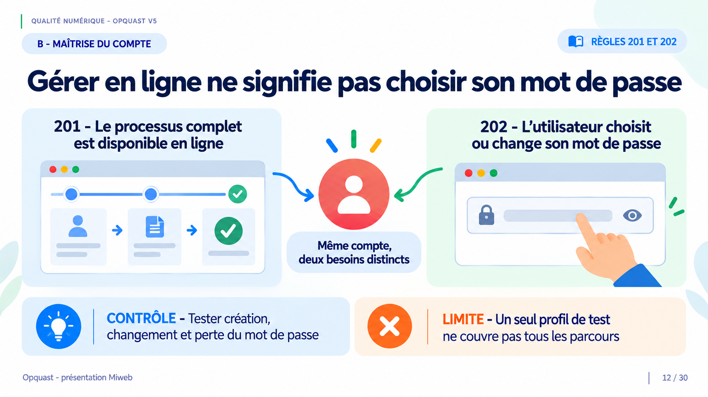
Deux panneaux de même importance sont reliés à un compte central. À gauche, une personne suit un processus en ligne complet ; à droite, une main agit sur un formulaire pour choisir ou changer le mot de passe. Un cartouche de contrôle et un cartouche de limite occupent le bas de la slide.
Deux maîtrises complémentaires
- La règle 201 exige que toutes les opérations liées au mot de passe soient réalisables intégralement en ligne, notamment la modification et la réinitialisation.
- La règle 202 permet de choisir son mot de passe dès la création du compte ou de modifier celui que le service a généré.
Impact du non-respect
- Une procédure hors ligne peut retarder ou faire échouer la reprise d’accès.
- Un secret imposé et non modifiable reste difficile à mémoriser et à maîtriser.
Ce que garantit la règle
- Ce que garantissent ces règles : un processus disponible en ligne et un mot de passe que l’utilisateur peut choisir ou changer.
- Le contrôle reste limité aux profils et parcours réellement testés.
Rendre le risque visible
- Le choix devient utile lorsque son niveau de sécurisation est rendu perceptible.
Slide 13 - Informer sur la robustesse sans confisquer le choix
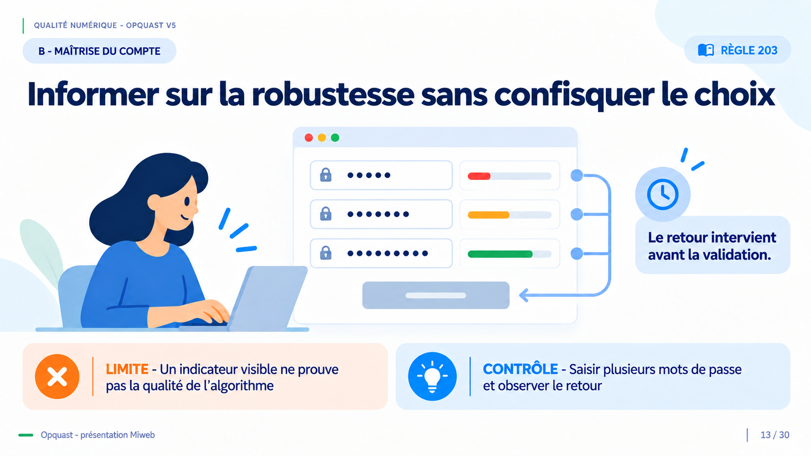
Une personne saisit successivement des mots de passe dans quatre états d’un même formulaire. Une barre passe du rouge à l’orange puis au vert avant l’apparition du bouton final. Deux cartouches distinguent le contrôle à effectuer et la limite de l’observation.
Règle 203 : rendre le risque perceptible avant validation
- Le dispositif fournit un retour sur le degré de sécurisation pendant le choix du mot de passe.
- Ce retour intervient avant la soumission définitive du formulaire d’inscription ou de changement.
- La règle informe l’utilisateur sans lui retirer nécessairement la liberté de son choix.
Impact du non-respect
- Sans indication, un mot de passe faible peut être conservé sans que son risque soit compris.
Ce que garantit la règle
- Ce que garantit la règle : le degré de sécurisation est indiqué avant validation.
- Un indicateur visible ne prouve ni la pertinence ni la qualité de l’algorithme employé.
Recréer sans restituer
- En cas d’oubli, il faut ensuite recréer le secret sans jamais restituer l’ancien.
Slide 14 - Réinitialiser n’est pas restituer l’ancien secret
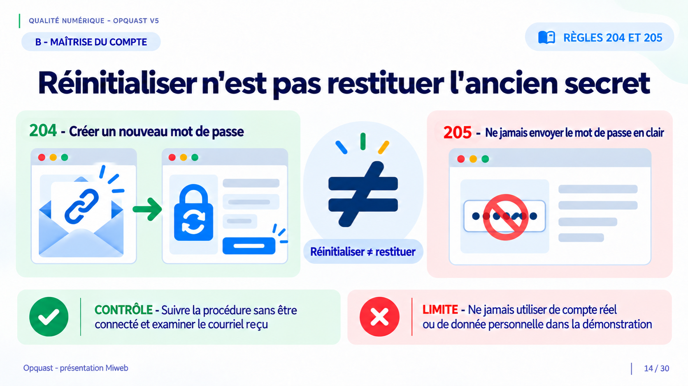
Un courriel contenant un lien conduit vers un formulaire de création d’un nouveau mot de passe. À droite, un champ masqué est barré pour montrer que l’ancien secret n’est jamais envoyé en clair. Le contrôle et sa limite sont présentés dans deux cartouches séparés.
Réinitialiser sans divulguer le secret
- La règle 204 prévoit une procédure accessible sans connexion pour créer un nouveau mot de passe.
- Elle exclut le simple renvoi du mot de passe actuel.
- La règle 205 interdit d’adresser un mot de passe en clair par courriel, lors de la création, du rappel ou de la réinitialisation.
Impact du non-respect
- Sans réinitialisation, l’utilisateur peut perdre durablement l’accès à son compte.
- Un mot de passe envoyé par courriel peut être intercepté ou compromis.
Ce que garantit la règle
- Ce que garantissent ces règles : l’accès peut être rétabli sans révéler l’ancien secret.
- Un lien temporaire peut conduire à la procédure, mais le mot de passe reste créé en ligne.
Préserver une solution de repli
- La maîtrise du compte dépend aussi d’une seconde voie de validation réellement utilisable.
Slide 15 - Deux moyens de validation ne signifient pas deux facteurs
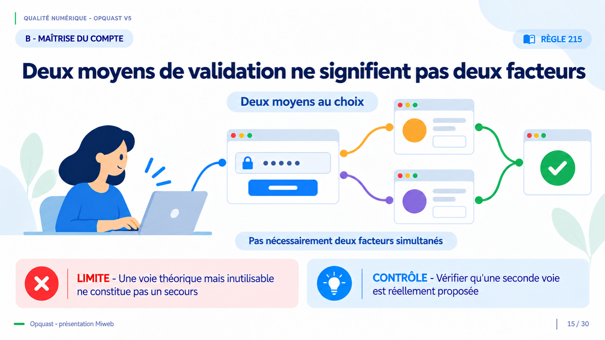
Une personne fait face à une opération sécurisée qui se divise en deux voies parallèles, illustrées par un téléphone et un document avec un code. Les deux voies convergent vers la même validation. Le sous-titre précise qu’il s’agit d’un choix, et non de deux facteurs simultanés.
Règle 215 : conserver une solution de repli
- Pour une opération protégée par une authentification forte, l’utilisateur dispose d’au moins deux mécanismes au choix.
- La règle ne demande pas d’utiliser deux facteurs simultanément ; elle demande une alternative lorsque le moyen prévu est indisponible.
- Cette seconde voie doit permettre d’accomplir réellement la même opération sécurisée.
Impact du non-respect
- L’utilisateur peut rester bloqué faute du terminal ou du canal imposé.
Ce que garantit la règle
- Ce que garantit la règle : une solution de secours limite les échecs et l’exclusion pour raisons techniques ou matérielles.
- Une voie seulement théorique ou inutilisable ne satisfait pas ce besoin.
Contrôler tout le parcours
- Ces garanties doivent maintenant être vérifiées sur le parcours complet du compte.
Slide 16 - Atelier : tester un compte de bout en bout
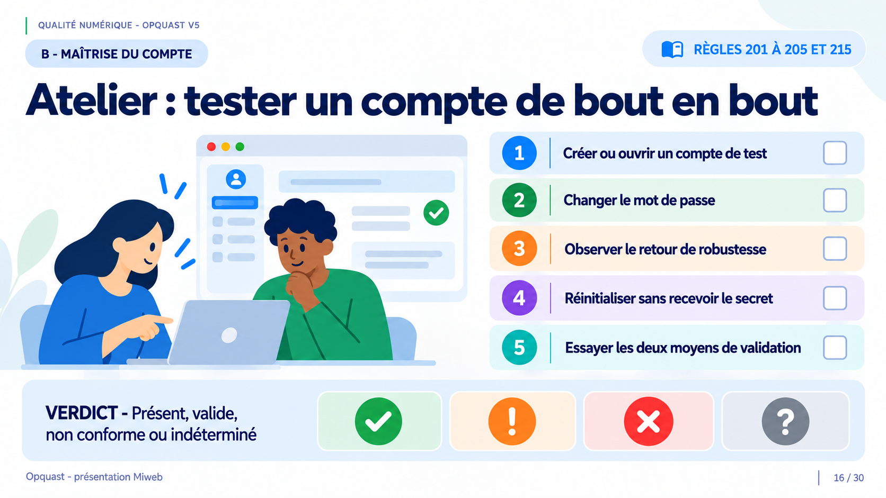
Deux personnes examinent un compte de démonstration face à une checklist de cinq actions cochées. En bas, un large cartouche énumère quatre verdicts possibles ; quatre capsules reprennent uniquement leurs pictogrammes dans le même ordre : deux coches, une croix et un point d’interrogation.
Un parcours contrôlé de bout en bout
- Le test commence avec un compte de démonstration, sans donnée personnelle ni mot de passe réel.
- Il couvre la création ou l’ouverture du compte, le changement du mot de passe et le retour sur son degré de sécurisation.
- Il se poursuit par une réinitialisation qui crée un nouveau secret sans recevoir l’ancien.
- Les deux moyens de validation sont essayés séparément pour vérifier qu’ils constituent de vraies alternatives.
- Le verdict distingue un mécanisme présent, valide, non conforme ou impossible à conclure avec la preuve disponible.
- Le résultat reste limité au profil, aux parcours et à l’état observés.
Des comptes aux réponses HTTP
- Après le compte, le contrôle se déplace vers les instructions reçues par le navigateur.
Slide 17 - Chapitre C : dire au navigateur ce qu’il peut accepter
Un navigateur central est relié à six panneaux illustrés sans texte technique supplémentaire. Ils représentent un type déclaré, l’interdiction de deviner ce type, la protection contre les scripts injectés, l’encadrement de la page, l’origine des contenus et l’intégrité d’un fichier.
Des instructions explicites avant d’interpréter le contenu
- Les règles 207 et 206 forment un premier couple : le serveur déclare la nature de chaque ressource et interdit au navigateur de chercher à la deviner.
- La règle 210 vise une protection explicite contre l’exécution de scripts injectés.
- La règle 211 définit qui peut intégrer la page dans un cadre, tandis que la règle 212 restreint l’origine des contenus chargés.
- La règle 214 vérifie l’intégrité du fichier tiers effectivement reçu.
- Ces mécanismes portent sur des risques voisins, mais chacun appelle une preuve distincte.
- Leur présence ne dispense jamais d’examiner leur valeur et leur portée réelle.
Déclarer avant d’empêcher de deviner
- Commençons par distinguer la déclaration du type MIME et l’interdiction de le deviner.
Slide 18 - Type MIME : déclarer et ne pas deviner
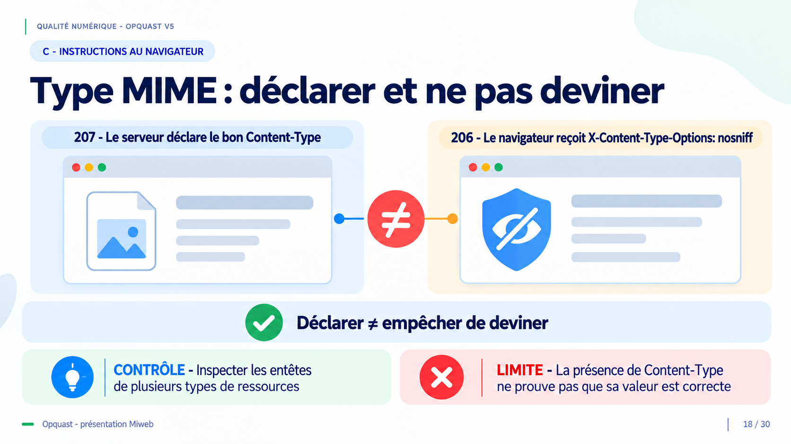
Un fichier issu d’un serveur traverse deux portes successives avant d’atteindre un navigateur. La première porte porte la règle 207 et la déclaration du bon Content-Type ; la seconde porte la règle 206 et l’entête X-Content-Type-Options avec la valeur nosniff. Une formule centrale distingue les deux fonctions.
Deux contrôles complémentaires du type MIME
- La règle 207 demande un entête
Content-Typedont la valeur correspond réellement au type de chaque ressource. - La règle 206 ajoute
X-Content-Type-Options: nosniffpour désactiver la détection automatique par le navigateur. - Déclarer un type et interdire de le deviner répondent donc à deux contrôles différents.
Impact du non-respect
- Une ressource mal identifiée ou interprétée comme un autre type peut dissimuler un contenu dangereux.
Ce que garantit la règle
- Ce que garantissent ces règles : le navigateur reçoit un type explicite et l’instruction de ne pas en déduire un autre.
- La présence de
Content-Typene prouve pas que sa valeur est correcte.
Trois politiques à distinguer
- Les règles suivantes utilisent parfois une même politique, mais répondent à trois questions différentes.
Slide 19 - Une même famille d’entêtes, trois questions différentes
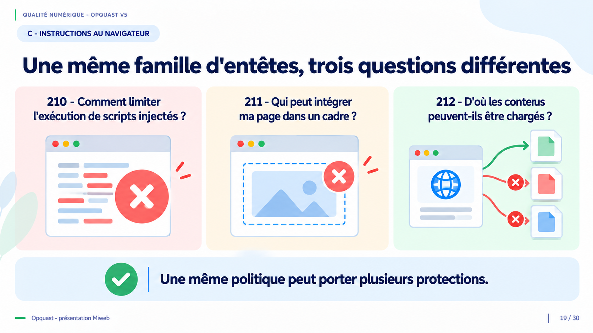
Trois panneaux de même importance entourent une page centrale. Le premier bloque un script injecté, le deuxième montre une page intégrée dans un cadre autorisé et le troisième filtre des contenus selon leur origine. Un bandeau commun indique qu’une même politique peut porter plusieurs protections.
Trois protections qui ne se confondent pas
- La règle 210 demande une information serveur explicite qui active ou renforce une protection contre les attaques XSS.
- La règle 211 contrôle les domaines autorisés à intégrer la page dans un cadre, avec
X-Frame-Optionsou la directive CSPframe-ancestors. - La règle 212 restreint l’origine des scripts, styles, images ou polices au moyen des directives adaptées de
Content-Security-Policy. - Une CSP peut donc contribuer à plusieurs protections sans rendre ces règles équivalentes.
- Pour chaque règle, il faut examiner la politique transmise, sa valeur et les pages auxquelles elle s’applique.
- La présence d’un entête ne prouve pas à elle seule son efficacité.
Une protection XSS actuelle
- La protection XSS doit maintenant être contrôlée avec un mécanisme actuel et maintenu.
Slide 20 - La règle 210 ne demande plus X-XSS-Protection
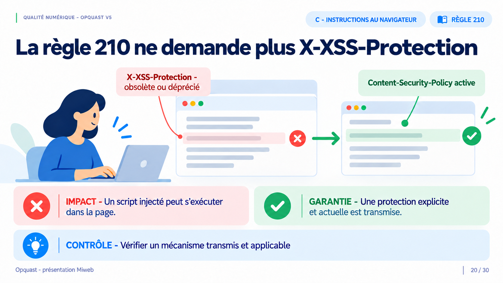
Une développeuse compare deux réponses serveur. À gauche, X-XSS-Protection est barré et qualifié d’obsolète ou déprécié ; à droite, une Content-Security-Policy active est validée et transmise à un navigateur. Une flèche relie l’ancienne pratique au mécanisme actuel.
Une protection XSS actuelle et applicable
- Une attaque XSS cherche à faire exécuter dans une page un script qui n'aurait pas dû l'être.
- La règle 210 demande au serveur de transmettre une information explicite qui active ou renforce une protection côté navigateur.
- La fiche Opquast actuelle cite notamment une Content Security Policy adaptée, transmise dans les entêtes HTTP et applicable aux pages concernées.
- Elle précise aussi qu'il ne faut plus reposer sur
X-XSS-Protection, mécanisme désormais considéré comme obsolète ou déprécié. - La présence d'une CSP ne suffit pas : sa politique peut rester trop permissive ou ne pas couvrir la page réellement contrôlée.
Contrôler l'encadrement de la page
- Après les scripts exécutés dans la page, examinons qui peut intégrer cette page dans un cadre.
Slide 21 - Qui peut intégrer la page dans un cadre ?
Une page centrale reçoit trois tentatives d'intégration. Le cadre autorisé est validé en vert, tandis que deux cadres tiers sont refusés en rouge. Deux cartouches relient cette décision à X-Frame-Options et à la directive CSP frame-ancestors.
Règle 211 : décider qui peut encadrer la page
- Un cadre peut afficher une page légitime à l'intérieur d'une autre interface.
- Le serveur doit transmettre une politique explicite avec
X-Frame-Optionsou la directive CSPframe-ancestors. - Cette politique autorise des domaines définis ou interdit totalement l'intégration.
Impact du non-respect
- Une intégration trompeuse peut détourner les clics et faire croire que l'utilisateur navigue sur le service attendu.
Ce que garantit la règle
- Ce que garantit la règle : le navigateur reçoit une consigne explicite pour limiter l'encadrement de la page.
- La valeur doit être adaptée, car le seul nom de l'entête ne prouve pas l'efficacité de la protection.
Des cadres aux ressources chargées
- Contrôler l'encadrement ne dit pas encore d'où viennent les scripts, styles, images et polices.
Slide 22 - Restreindre l'origine des contenus
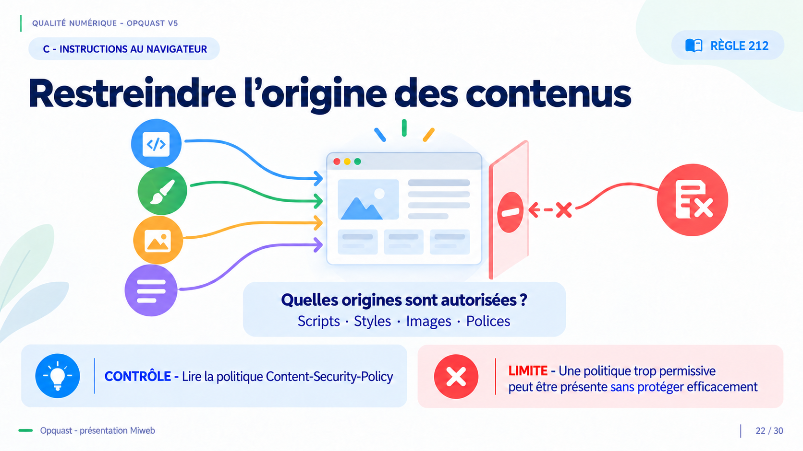
Quatre flux colorés représentant les scripts, styles, images et polices traversent une barrière de sélection vers une page web. Un cinquième flux provenant d'un serveur est arrêté en rouge. Le contrôle et la limite sont présentés dans deux cartouches inférieurs distincts.
Règle 212 : choisir les origines autorisées
- Une page charge des scripts, des styles, des images et des polices depuis plusieurs sources.
- L'entête
Content-Security-Policypermet d'indiquer au navigateur les origines qu'il peut afficher ou exécuter. - Les directives
script-src,style-src,img-srcetfont-srcrépondent à des familles de contenus différentes.
Impact du non-respect
- Un contenu indésirable ou issu d'une source non autorisée peut être affiché ou exécuté dans la page.
Ce que garantit la règle
- Ce que garantit la règle : le navigateur reçoit une politique qui restreint l'origine des contenus.
- Une politique présente mais trop permissive ne garantit pas une protection efficace.
De l'origine au fichier exact
- Une origine autorisée peut encore fournir une ressource qui a été modifiée.
Slide 23 - Vérifier le fichier exact, pas seulement son origine
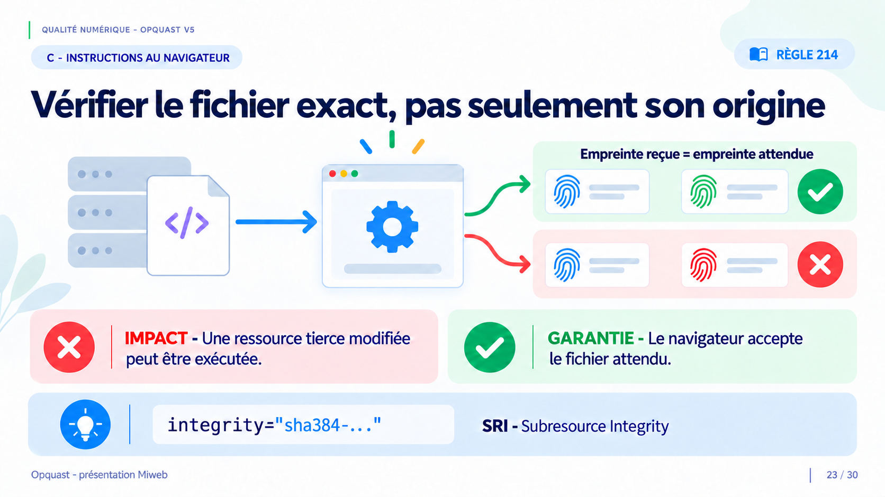
Un serveur tiers envoie un fichier JavaScript vers un navigateur, qui en calcule l'empreinte. Deux empreintes identiques sont reliées par un signe égal vert. L'attribut integrity avec sha384 et le nom SRI sont affichés sous la comparaison.
Vérifier le fichier réellement reçu
- Une origine autorisée peut servir aujourd'hui le fichier attendu, puis un fichier modifié demain.
- L'attribut
integrityfournit au navigateur l'empreinte cryptographique attendue pour chaque ressource tierce appelée par un élémentscriptoulink. sha384désigne ici une fonction de hachage.- Ce n'est ni un chiffrement, ni un mot de passe, ni une information secrète.
- Le navigateur calcule l'empreinte du fichier reçu et la compare à celle déclarée dans la page.
Impact du non-respect
- Une ressource tierce modifiée peut diffuser ou exécuter un code qui n'était pas celui prévu lors de son intégration.
- Faire confiance au seul domaine d'origine ne permet pas de détecter cette modification du fichier.
Ce que garantit la règle
- Si les empreintes correspondent, le navigateur dispose d'une preuve que la ressource reçue correspond au contenu attendu.
- Si elles diffèrent, le navigateur refuse d'exécuter le script ou d'appliquer la feuille de styles concernée.
- Cette garantie porte uniquement sur la ressource associée à l'attribut
integrityet sur l'empreinte déclarée.
Réunir les autres preuves
- Il reste à réunir les preuves des entêtes et du code source sans confondre présence, validité et efficacité.
Slide 24 - Atelier : lire les entêtes et le code source
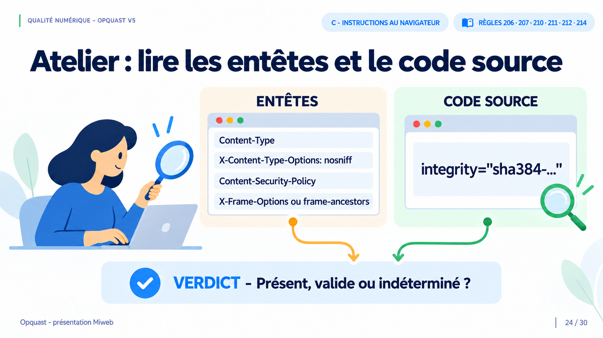
Une développeuse examine deux panneaux. Le panneau ENTÊTES réunit Content-Type, X-Content-Type-Options, Content-Security-Policy et le contrôle des cadres. Le panneau CODE SOURCE affiche uniquement l'attribut integrity. Les deux observations convergent vers un verdict prudent.
Réunir deux familles de preuves
- Les entêtes HTTP indiquent notamment le type déclaré, l'interdiction de le deviner, la politique de contenus et le contrôle des cadres.
- Le code source permet de vérifier l'attribut
integrityassocié aux ressources tierces. - Ces observations répondent à des règles différentes et ne doivent pas être fusionnées en un verdict unique.
Borner le verdict
- Présent signifie que le mécanisme est observable.
- Valide exige que sa valeur ou son fonctionnement réponde au contrôle attendu.
- Indéterminé reste le bon verdict lorsque la preuve disponible ne permet pas de conclure.
- Une seule page ne couvre pas le service, et un entête présent peut rester trop permissif.
Examiner ensuite l'exposition du serveur
- Après les instructions données au navigateur, le contrôle porte sur les informations que le serveur révèle inutilement.
Slide 25 - Ne pas exposer l'inutile
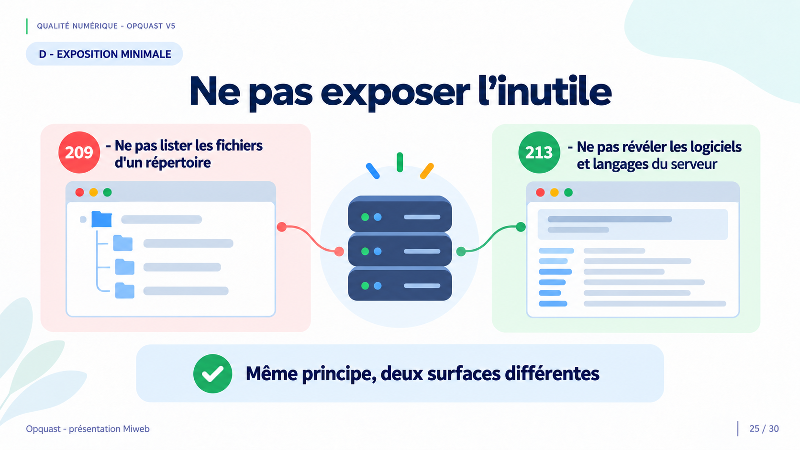
Un serveur central alimente deux panneaux distincts. À gauche, un navigateur affiche une arborescence de fichiers associée à la règle 209. À droite, une réponse technique schématique est associée à la règle 213. Un cartouche inférieur rapproche leur principe sans confondre les surfaces.
Deux informations inutiles, deux surfaces
- La règle 209 concerne les répertoires sans page d'index qui pourraient afficher la liste de leurs fichiers.
- La règle 213 concerne les entêtes HTTP qui révèlent les logiciels ou langages utilisés côté serveur.
- Dans les deux cas, l'information exposée n'apporte rien à l'utilisateur et peut faciliter la préparation d'une intrusion.
- Ces règles ne se contrôlent pourtant pas au même endroit.
Observer chaque fuite séparément
- Pour la première, il faut appeler un répertoire sans page par défaut et vérifier qu'aucune liste n'apparaît.
- Pour la seconde, il faut examiner les entêtes envoyés par le serveur et rechercher une divulgation technique.
Passer du principe au contrôle
- Les deux observations suivantes produisent des résultats attendus distincts et une limite commune de portée.
Slide 26 - Contrôler ce que le serveur révèle
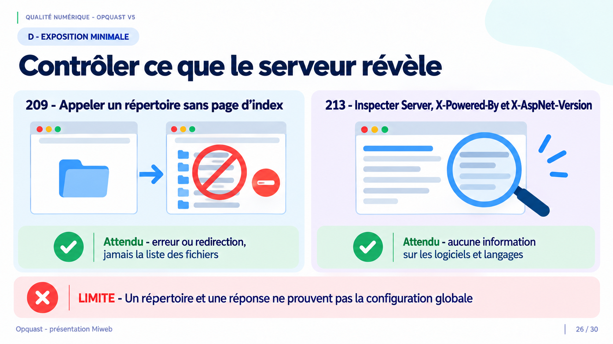
Deux panneaux présentent les contrôles séparés. À gauche, une liste de fichiers barrée conduit à une erreur. À droite, une réponse HTTP composée uniquement de traits abstraits est examinée à la loupe. Une limite commune rappelle que ces deux observations ne couvrent pas toute la configuration.
Deux contrôles, deux résultats attendus
- Pour la règle 209, l'appel d'un répertoire sans page par défaut doit mener à une erreur ou à une redirection, jamais à la liste de son contenu.
- Pour la règle 213, les entêtes HTTP ne doivent révéler aucune information sur les logiciels et langages utilisés côté serveur.
Impact du non-respect
- Une liste de fichiers peut rendre accessibles des éléments qui n'étaient pas destinés à être publics.
- Une information de version peut orienter une personne malveillante vers une faille documentée.
Ce que garantit la règle
- Ce que garantit la règle : les réponses contrôlées ne livrent ni l'énumération du répertoire ni les informations techniques recherchées.
- Un répertoire et une réponse restent un échantillon, pas une preuve de la configuration globale.
Prolonger la confiance hors du serveur
- Le dernier chapitre distingue maintenant l'information sur une transaction de l'authentification des courriels.
Slide 27 - Informer sur la sécurité d'une transaction
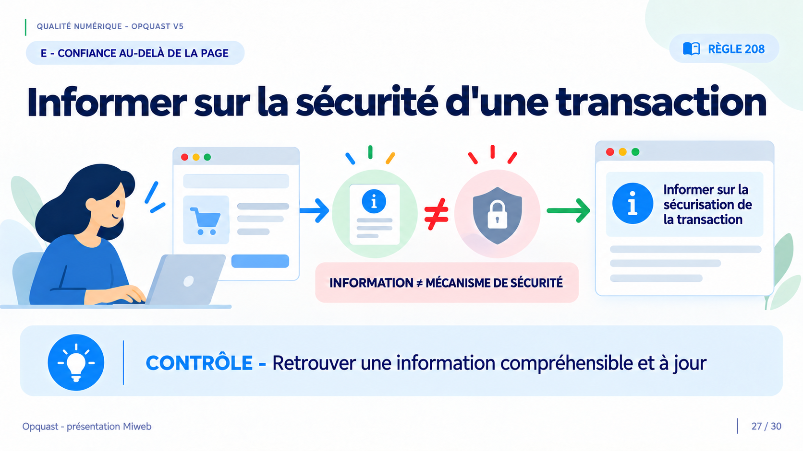
Une usagère quitte une page de transaction simplifiée pour consulter une rubrique d'aide. Cette aide affiche l'information sur la sécurisation de la transaction. Deux cartouches séparés par un signe de différence opposent clairement l'information au mécanisme technique.
Règle 208 : rendre l'information accessible
- Une transaction en ligne peut entraîner le transfert de données sensibles qui doivent être chiffrées.
- L'utilisateur doit pouvoir retrouver facilement les informations sur le mode et le niveau de chiffrement, par exemple dans une aide ou une FAQ.
- Le service peut aussi expliquer comment retrouver cette information dans l'interface des principaux navigateurs.
Impact du non-respect
- L'utilisateur manque d'informations sur la sécurisation des échanges de données sensibles.
Ce que garantit la règle
- Ce que garantit la règle : l'information sur la sécurisation de la transaction reste accessible et compréhensible.
- Cette information ne prouve pas, à elle seule, que le mécanisme annoncé fonctionne effectivement.
De la transaction au courriel
- La confiance quitte maintenant la page pour suivre les messages envoyés au nom du service.
Slide 28 - Authentifier le domaine qui envoie les courriels
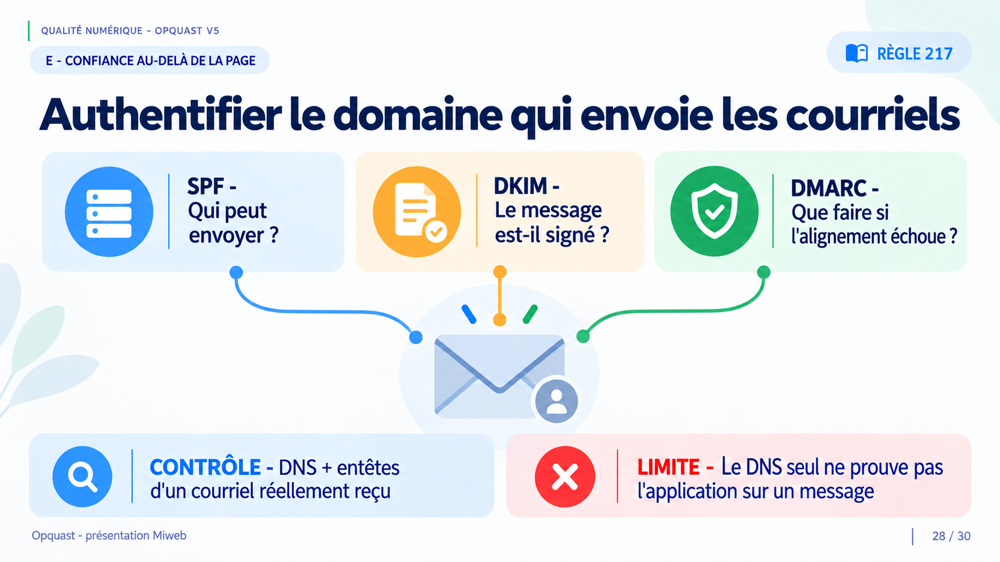
Trois cartes distinctes associent SPF à l'autorisation d'envoyer, DKIM à la signature du message et DMARC à la politique d'alignement. Leurs flèches convergent vers une enveloppe validée. Le contrôle réunit DNS et entêtes du courriel, puis une limite borne la conclusion.
Règle 217 : authentifier le domaine d'envoi
- SPF publie dans le DNS les serveurs autorisés à envoyer des courriels pour le domaine.
- DKIM associe aux messages une signature cryptographique vérifiable grâce à une clé publique publiée dans le DNS.
- DMARC définit une politique de traitement et permet de vérifier la cohérence avec les pratiques d'envoi.
Impact du non-respect
- Des courriels frauduleux peuvent sembler provenir du service, tandis que les messages légitimes risquent davantage d'être classés comme indésirables.
Ce que garantit la règle
- Ce que garantit la règle : le domaine dispose de mécanismes d'authentification configurés et contrôlables.
- Les entêtes d'un courriel reçu restent nécessaires pour confirmer l'application des signatures et de la politique au message réel.
Borner toutes les preuves
- Un enregistrement DNS, comme une page ou un entête isolé, ne permet pas de conclure au-delà de ce qui a été observé.
Slide 29 - Un contrôle ne prouve que ce qu’il observe
Cinq cartes associent une observation locale à une conclusion générale refusée par un signe de différence. Elles comparent une page au service entier, un entête à une politique efficace, une procédure à un parcours complet, un enregistrement DNS à un courriel authentifié et la conformité Opquast à un audit cyber.
Borner chaque conclusion
- Une page contrôlée ne représente pas automatiquement tout le service.
- Un entête présent ne prouve ni la pertinence de sa valeur ni l'efficacité de la politique.
- Une procédure visible peut encore échouer pour un profil, un rôle ou une étape qui n'a pas été testée.
- Un enregistrement DNS ne démontre pas à lui seul qu'un courriel reçu est correctement authentifié.
- Une conformité aux règles de sécurité Opquast reste un socle de prévention, pas un audit cyber complet.
Conserver la portée de la preuve
- Chaque résultat doit nommer les pages, les profils et les messages observés, ainsi que l'instant du contrôle.
- Lorsque la preuve manque, le verdict reste indéterminé plutôt que supposé conforme.
Transformer le contrôle en action
- Ces limites permettent maintenant d'attribuer une preuve vérifiable à un propriétaire capable d'agir.
Slide 30 - Protéger, limiter, vérifier
Une équipe numérique mixte entoure une chaîne allant du navigateur au compte, au fichier tiers, au serveur et au courriel. Trois panneaux structurent l'action collective : protéger le parcours, limiter l'exposition et vérifier les preuves. Une question finale invite à choisir le prochain contrôle.
Relier chaque règle à une action vérifiable
- Protéger le parcours, c'est sécuriser le canal, préserver la maîtrise du compte et donner au navigateur des instructions explicites.
- Limiter l'exposition, c'est éviter de révéler des fichiers ou des informations techniques inutiles.
- Vérifier les preuves, c'est contrôler le mécanisme réellement transmis, le parcours réellement utilisable et le message réellement reçu.
- Chaque résultat doit rester associé à son périmètre, à son instant d'observation et à ce qui demeure indéterminé.
- La responsabilité est distribuée entre infrastructure, produit, développement, éditorial, support, messagerie et DNS.
Conclusion
- La sécurité Opquast devient concrète lorsqu'une règle est reliée à un risque utilisateur, à une preuve contrôlable, à une limite explicite et à un propriétaire capable d'agir.